Please buy me a coffee/tea! ☕
Page under construction!
Travelling around Benelux by train: general tipsGreetings! The following are some information on train travel in Benelux (Belgium, Netherlands, and Luxembourg). Belgium built the first steam railway in Continental Europe in 1835. This was followed by the Netherlands in 1839, and Luxembourg in 1845. Included in this page are some tips on train travel in Benelux in general, and also some on neighbouring France and Germany. Below are schematic maps I have drawn for the regular domestic passenger train services in Benelux in 2026 (Sun 14-12-2025 to Sat 12-12-2026). Due to the complexity of the networks, The Netherlands is presented in five maps, and Belgium & Luxembourg are presented in four maps. (Click on the thumbnails to open the pdf's.)
Domestic and local cross-border train network in The Netherlands:
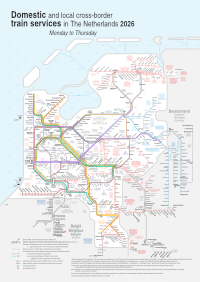
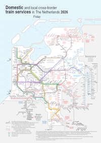
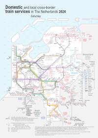
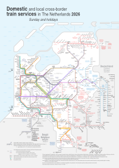
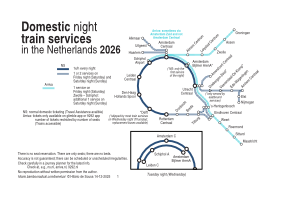
Domestic and local cross-border train network in Belgium & Luxembourg:
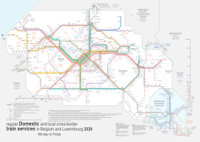
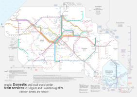
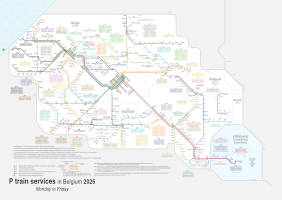
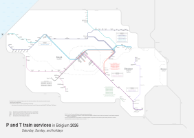
If you are interested, here are videos of the categories of passenger rail services in Benelux that I took in 2018 (let's see whether I can make some new videos in the future):
The following is a summary of the following sections.
Jump to:
Some common themes throughout Benelux
- Most trains have two classes of travel: first class and second class. Most people travel in second class, and tickets for first class are more expensive. Smaller trains may have very small, or no first class sections. You can tell which carriage or which section of a carriage is first or second class by a big number 1 or 2 next to the doors. The colour of the seats may be different (but this difference is often not very distinctive in Belgium). The first class section of a train is also marked by an extra line on the exterior of a train. Notice that in the Netherlands, seats in the vestibules (the ends of a train carriage) are always second class, whereas in Belgium, the seats in the vestibules can be first class.

Belgium: In this case the first class section, including the vestibule, is marked by a yellow line on the exterior of the train

Netherlands: In this case the thick blue lines on the exterior indicate the first class sections; seats in the vestibule are always second class. - There is no seat reservation on domestic trains in Benelux. Having a ticket, either first class or second class, does not guarentee a seat. With a second class ticket, you are not allowed to sit or stand still in a first class section while travelling.
- QR-code tickets (e.g. paper, e-mail, app) do not need to be activated. Some app tickets require you to press buttons to activate the ticket. NFC (contactless) tickets need to be activated at card readers. Dutch paper tickets are NFC tickets. Belgian paper tickets have a QR-code. Luxembourgish 1st-class paper tickets are activated when they are issued. In Benelux, perhaps there are no longer paper tickets which are validated by sticking them into time-stamping machines. These are still sometimes encountered in Germany and France. Paper tickets that need to be time-stamped for validation may say something like Bitte entwerten 'please cancel' or Hier entwerten 'cancel here' in German, or BILLET à composter avant l'accès au train 'TICKET to be validated before accessing the train' in French.
- Platforms are not numbered by the platforms themselves, but by track number. (Not all tracks have platforms, so signs to platforms may skip some numbers.) 'Track' is spoor in Dutch, voie in French, and Gleis in German. The word for (railway) 'platform' is perron in Dutch, quai in French, and Bahnsteig in German. (Do not make the mistake of saying that, e.g., you dropped something on the 'track' when you mean 'platform'.)
- Longer platforms may be subdivided into sections A and B, or sometimes even C and D. Different sections can have different trains on them, going to different destinations. Check real-time departure information carefully.
- Sometimes trains decouple, i.e. one connected train splits into two trains. Check the platform section, and the destinations of each coupled train very carefully.
- Most international train tickets without compulsory reservation specify which railway border crossing point you have to cross a border at. (The border points are stated in the maps above.) 'Border' is grens in Dutch, frontière in French, and Grenze in German (often abbreviated as gr / fr / Gr). Do not cross the border at the wrong border point. (Different border points incur different charges.）
- Breaking of journey (i.e. leaving a train service at a midway point and rejoining a later train service to continue the journey): a) unless the ticket restricts you to a particular train service, breaking of journey is allowed in The Netherlands, as long as you finish the rest of the journey within the designated time (latest possible time being 04:00 of the following day); b) breaking of journey is no longer allowed in Belgium since late 2025; if you need to break a journey, you need to buy two separate tickets; c) Luxembourg has fare-free public transport, except first-class train travel, which requires a time-based ticket; any transfer is allowed within the time frame.
- In Benelux, if you have a ticket for high-speed rail service (ICE, Eurostar, TGV), or Eurocity Direct, usually the ticket DOES NOT allow you to catch a slower train over the same trajectory (unlike, e.g., the norm in Germany). If you miss your high-speed train, ask railway staff, they may be able to help you (e.g. your ticket may allow changes even after the departure time).
- Railway companies have to give compensation over major delays that are not announced before the ticket is sold. This is EU's page on rail passenger rights. See what NS International, NMBS/SNCB International, and CFL say over delay compensation.
The Netherlands: domestic and local cross-border
Companies
Most domestic trains in the Netherlands are run by Dutch Railways, or "NS" (Nederlandse Spoorwegen). The second largest company is Arriva, which runs some regional lines. There are also other smaller companies, and the provincial brands of Blauwnet, RRReis, and R-net. Knowing the operator of a service only matters if you are using a contactless payment method. Nowadays there are at most two types of contacless card-readers at Dutch railway station, one for NS and one for all the non-NS services. (The three types at Zutphen station have been streamlined to two.) The NS vs. non-NS operators are shown in the maps above.
Service categories
- Sprinter (Spr): primarily all-stop services, run by NS
- Stoptrein / RS : all-stop services run by other companies
- Sneltrein / RE: limited-stop services run by other companies (a grade in between RS and IC)
- InterCity (IC): usually only stops at larger stations. All ICs are run by NS, except IC23 Zwolle – Enschede (weekdays only), which is part of the Blauwnet system
- EuroCity (EC): international IC, run jointly by NS and NMBS/SNCB (Belgian Railways). The section in The Netherlands (Rotterdam Centraal – Breda) has normal Dutch domestic ticketing.
- InterCity direct (ICd): domestic IC that runs through the Schiphol – Rotterdam high speed line. There is an ICd supplement for travelling between Schiphol Airport and Rotterdam Centraal on top of the normal domestic fare.
- Eurocity Direct (EcD): ICd which extends to Belgium from Rotterdam Centraal. Normal Dutch domestic ticketing applies north of Rotterdam Centraal. There is an ICd supplement for travelling between Schiphol Airport and Rotterdam Centraal if domestic Dutch ticketing is used. NS subscriptions are not valid between Rotterdam Centraal and Hazeldonk border.
- InterCity Express (ICE): German high speed service. For domestic usage within the Netherlands, there is a small ICE supplement on top of the normal Dutch domestic fare.
The aforementioned categories of train services are covered by the same domestic ticketing when travelling within the Netherlands, and the different companies running these services have very similar pricing structures. (This is different from Germany, where ICE/IC have very different pricing from those of the slower trains.) Different from all of the above is the Arriva night train, which has its own ticketing.
Tickets
For the ordinary single and (day) return domestic tickets, NS and Arriva sell tickets to all train stations in the Netherlands. You don't have to buy separate tickets if your journey involves spearate companies. (Sometimes there are deals which are only valid on certain companies or lines.) The number of tickets do not run out, and there is no seat reservation. The only exception to these is the Arriva night trains, oh which the number of tickets is restricted by the number of seats (but there is no seat reservation). (On the other hand, the NS night trains have normal domestic ticketing.)
When you purchase a ticket from a ticket machine, you may be asked which company you want to use for your journey if there is a choice.
In the Netherlands, you have to have a ticket before you board a train; most usually you cannot buy a ticket inside a train. You may be fined if you are caught travelling without a ticket.
There are three main forms of tickets: contactless, QR-code, and phone location tracking.
Contactless
Contactless tickets require you to tap the ticket close to a card reader. The same contactless system is used for basically all public transport in the Netherlands.
For ordinary full-fare second class journeys, you can use OVpay, which is tapping your ordinary NFC-enabled debit or credit card, or an associated mobile device to a card reader. Age-based discount can be activated before using OVpay. Arriva has various OV-pay subscriptions.
The tickets sold by ticket machines and over the counter are single-use OV-chipkaarts. A single-use OV-chipkaart costs €1.5 on top of the train fare. At a ticket machine, you specify the origin and destination, date, and first versus second class. After inputting these details, if there is more than one reasonable route, the machine may ask you which route you want to take if there is a price difference. For domestic tickets, it is not possible to specify a mid-way detour station. For international tickets, it may be possible to specify a border crossing point which is different from the assumed one.
The NS ticket machines can handle tickets to all domestic destinations, most destinations in Belgium and Luxembourg, and some destinations in Germany (see the list of destinations). The Dutch ticket machines cannot handle seat reservations for ICE to Germany. The Dutch ticket machines do not sell tickets on high speed trains towards the south (Eurostar, TGV). The Dutch ticket machines can only handle full-fare tickets; for long-distance international travel, it is usually better to buy tickets online.
If you are already close to the border, using the foreign ticket machines found at some border stations are usually better than using Dutch ticket machines for cross-border journeys.
Belgian ticket machines can be found at (from west to east):
- Roosendaal
- (No Belgian machines at Breda)
- Maastricht and Maastricht Randwyck (but not at Eijsden)
German ticket machines can be found at (from south to north):
- (No German ticket machines at Heerlen, Landgraaf, and Eygelshoven Markt)
- Venlo
- Arnhem Centraal and Zevenaar
- Enschede (no German ticket machines at Enschede De Eschmarke and Glanerbrug, but there are ticket machines inside the German RB51 and RB64 trains)
- (No German ticket machines at Hengelo and Oldenzaal, but there are ticket machines inside the German RB61 trains)
- (No German ticket machines from Groningen to the border)
There is also the durable OV-chipkaart. A durable OV-chipkaart usually costs €7.5. (This is purely a purchase cost, not a deposit.) There are anonymous cards and personal cards. Anonymous cards can be purchased from many ticket machines and from OV-chipkaart service points. Anonymous cards can be used by any one person at a time, and you always pay full fare.
Personal cards have to be purchased on-line. Subscriptions (e.g. discount subscriptions) can be loaded into a personal OV-chipkaart. An OV-chipkaart can be purchased on its own. With some subscriptions, you can buy one together with the subscription. In some cases they provide you one for free.
Unless you have a post-pay subscription or a ticket pre-loaded into your OV-chipkaart, you have to travel by credit, i.e. load money beforehand into the OV-chipkaart. If you travel by credit, they pre-deduct an amount of credit when you tag-on ("check in"). The amount can be as high as €20, depending on the bus / train / ferry company. If you do not already have that amount of credit in your OV-chipkaart, you cannot tag on. When you tag out, the difference between the journey fare and the pre-deducted amount is adjusted accordingly, i.e. you get a refund or are charged more. If you do a "transfer", e.g. you transfer between train companies / systems, or you want to go through the station gates and get out of the paid-area temporarily, the amount of credit you have in the card could have gone below the amount needed to tag-on again (recharge your card in this case).
With contactless ticketing, you need to tag on and tag off (inchecken and uitchecken) at the card readers. Transferring between different companies / systems may require you to tap off one company and tag on with another comapny. (A Dutch journey planner tells you if you need to do so.) Most stations only have card readers of one company. As shown in the maps above, sometime you may encounter two. (Zutphen, which used to have three, now only has two: NS vs. non-NS.) Tap in and out of each company / system accordingly at the connecting station.
Tagging off and then on again within 35 minutes is considered a transfer (a new flagfall is not charged). With card-reading poles, you have to wait 100 seconds before you can tag off again to cancel a tag on. (The purpose of this is to avoid double-tapping. You can also use this method to check whether you have already tagged on.) Tagging off within 20 minutes of tagging on at the same station gives you full refund of the pre-deducted amount. With NS this time limit is 60 minutes.
There are two types of card readers: gates and poles. Not all stations have gates. At stations without gates, tag in and out of the system at the card-reading poles, which are standing objects with a circular area where you tap the contactless ticket. At stations with gates, make sure that you tap in and out of the system at the correct side of the gate. If you encounter gates that are not closed, you still need to tag on and off at the correct side of the gate, as if the gates are closed. If you arrive from a foreign country by train, do not use a contactless ticket (e.g. bank card, durable OV-chipkaart) to get out of a station if the ticket does not have a corresponding tapping in record from within the Netherlands. If you do so, there will be a penalty for irregular usage.
Sometimes there are card readers on a platform, with a sign saying overstappen above the readers. These are for overstappen "transfer", i.e. when transferring between different companies / systems, or when you arrive from a foreign country by train, and (having used up the international ticket) continue to travel domestically in the Netherlands using a contactless payment method. Do not use these platform card readers unless you are actually transferring (as there could be station gates you need to get out of if you want to leave the station).
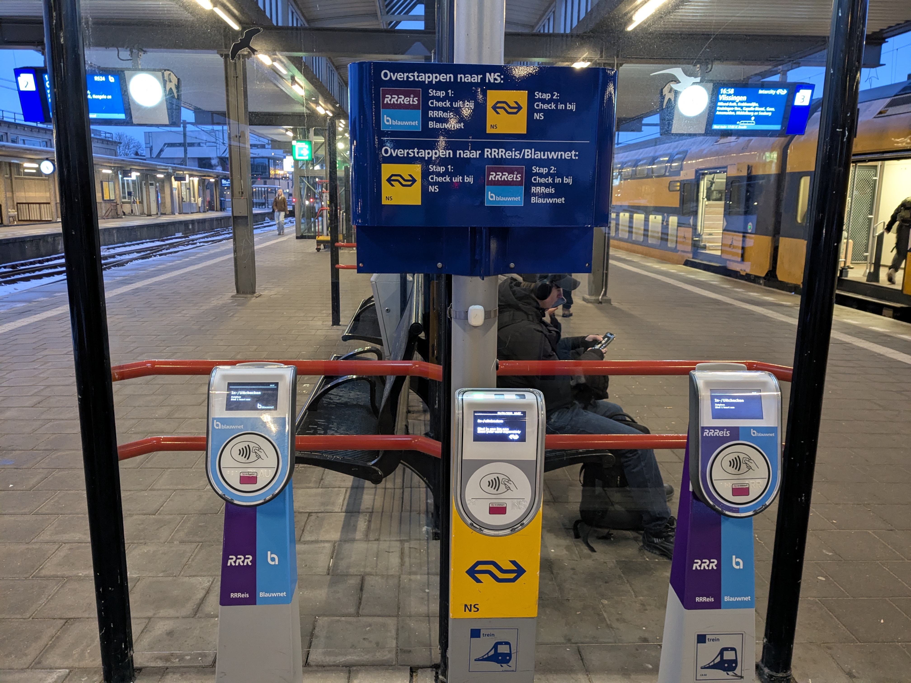
There are Dutch OV-chipkaart readers at the following stations in Germany close to the Dutch border. You can use normal Dutch contactless payment methods to travel between the Netherlands and these German stations (but not for travel within Germany). From south to north these are:
- Herzogenrath, Aachen West, and Aachen Hbf on RE18
- Emmerich-Elten, Emmerich, and Praest on RE19
- Gronau on RB51 or RB64
- Weener, and Leer (Ostfriesland) (curently there are only replacement buses running, but you can still use Dutch OV-chipkaart to/from the Netherlands (?))
(There are some, but do not count on there being OV-chipkaart credit-loading machines in Germany. Preload enough credits in The Netherlands, or use an online / automatic credit-loading method, or use OV-pay.)
Currently OV-pay (bank card / mobile pay) cannot handle first class travel. For single-use OV-chipkaarts, second versus first class is determined when you buy the ticket. For durable OV-chipkaarts, they are set to second class by default. To switch to first class, do so at a ticket machine, or in the railway company app if your card is linked to an online account with them.
QR-code
Tickets sold on the internet has a QR-code. Tickets can be purchased from the NS website, or from apps like the NS app, Arriva's glimble app, the 9292 app, and the Gaiyo app. For international travel, there are e.g. the NS International website and app.
The QR-code can be used to open station gates. Most gate readers these days read both QR-codes and contactless tickets. There may be some gate readers which only read contactless cards, but there is at least one gate at each station that can read QR-codes.
If you use a QR-code from a phone, because the reader for QR-code and contaless payment is at the same location at a gate, if the reader fails to read the QR-code and you put the phone too close to the reader, the reader might register you as having tagged on with contactless payment instead. You would then have to walk in, and then walk out of another gate again to cancel the contactless payment. It is strongly recommended that if you use a QR-code from a phone, switch off the NFC function of the phone if possible, or at least not put the phone too close to the card reader.
If the station has no gates, or if the gates are open, then there is nothing you need to do; just board the train. (QR-code tickets have a date on them, and you do not have to activate them.)
Belgian tickets for the Netherlands usually have a QR-code for opening Dutch station gates. German tickets usually do not have a QR-code which works for Dutch station gates. Ask staff for help. There are also intercom buttons in the proximity of ticket gates; press the blue button (not the emergency red button unless you have an emergency), explain the situation to the operator (voice only), and they will open the gates for you.
Location tracking
This works with Arriva's glimble app, and only in parts of the country. With a credit card tied to the app, and with a phone a) that is not in flight mode; b) with (mobile) internet switched on constantly; and c) with location tracking switched on, you can pay by swiping in in the app before you board the train / bus to begin the journey, and swiping off at the end of the whole journey, if the whole journey is conducted in an area where this system is supported. The app records the details of your journey, and charges your credit card accordingly. Currently this works for: a) Arriva trains in Friesland and Groningen provinces; b1) Arriva buses and trains in Limburg province, including the RS11 train to Nijmegen; and b2) RE18 to/from Aachen Hbf, and RE 1 or RE 9 between Aachen Hbf and Köln Hbf (Cologne). There are also e.g. day tickets, which also require you to swipe in and out in the app, without the need to tie a credit card to the app. A QR-code is generated for getting through Dutch railway station gates.
Pricing
Do I need to buy domestic tickets early? It depends.
NS has PriceTime Deal (Prijstijd Deal): for off-peak domestic journeys run entirely by NS, there can be a discount of up to 60% if you book at least one day ahead online (website / app). Each journey has to be booked separately; there is no special deal for return trips. Not all destinations are available, e.g. there is no PriceTime Deal for journeys that involve Schiphol Airport (even when just transferring). Do a normal journey search in the NS website / app, and it shows you if a PriceTime Deal / Prijstijd Deal discount is available for a particular off-peak trip. After the purchase, an e-ticket is issued, in the form of an e-mail and/or a QR-code loaded into the NS app. A time period during off-peak is stated, and the passenger has to complete the entire trip during this period. For shorter trips, there are usually many departures which satisfy the time limit, but for longer trips, there may be only one or two departures possible.
If you travel with someone with a NS subscription, you may qualify for samenreiskorting, which is 40% off full fare (see below).
Different companies have slightly different pricing (sometimes different sections have different pricing). The normal single and return tickets have distance-based pricing by kilometer, or by tariff unit. A flagfall or a minimum number of tariff units is charged. When a journey involves transferring between two or more companies / systems, only the flagfall or minimum unit charge of the first applies. (Hence the fare in one direction can be different from that in the opposite direction.
This is NS's map of tariff units (front, back). (Other companies have different pricing for their own sections.) One tariff unit is approximately 1 km. However, the units are adjusted so that in many cases, travelling to the opposite end of a loop costs the same either way (check with the NS journey planner to see whether this is the case.) For instance, going from Breda to Utrecht Centraal costs the same going west via Rotterdam Centraal, or east via 's-Hertogenbosch. Similarly, going from Amsterdam Centraal to Rotterdam Centraal, the price is the same travelling west on the InterCity via Den Haag HS, or east on the Sprinter via Breukelen / Woerden. Travelling in the middle with Sprinter to Schiphol Airport and then InterCity direct or Eurocity Direct to Rotterdam Centraal, also has the same base price, before the ICd surcharge (see below).
A day-return ticket is just double the fare of a single ticket. (If you get a single-use OV-chipkaart from a ticket machine, or a domestic ticket from a ticket counter, a single-use OV-chipkaart costs €1.5 in both cases.)
For normal domestic travel, there are two kinds of supplement (i.e. surcharge on top of the base fare):
- InterCity direct supplement (ICd toeslag) €0 / €1.92 (off-peak) / €3.2. There is a surchage if you travel with a domestic ticket on an InterCity direct or Eurocity Direct service on the high speed rail line between Schiphol Airport and Rotterdam Centraal. This supplement is not applicable to, e.g., children travelling on Rairunner or Kids Vrij, or passengers travelling on an international ticket. (The other domestic sections of the ICd / EcD services do not require this surcharge.) If your ticket does not already include the ICd supplement, one way of paying this is by tapping your debit/credit card or durable OV-chipkaart once at the red ICd supplement card readers, which stand on the platforms of stations where ICd / EcD run. (DON'T tap these red card readers again when you get off the train.) The off-peak rate is given when the tapping is done during off-peak; after tapping, it is OK if the train goes through the Schiphol – Rotterdam high speed line during peak time.
- InterCity Express supplement (ICE toeslag) €0 / €3.2. Travelling on the ICE within the Netherlands is just the normal domestic fare plus €3.2 one-way. This supplement is not applicable to, e.g., children travelling on Railrunner, and holders of most NS subscriptions.
NS sells various types of domestic tickets, e.g. group, tourist-oriented, day-unlimited, child, pet, bicycle tickets. (Fully folded bicycles travel for free.) The fare for a day-return ticket is just double that of a single ticket.
There is the Euregio ticket, which is a day ticket valid on public transport in Dutch Limburg south of Roermond (inclusive), and large areas in neighbouring Belgium and Germany.
There are the various types of NS subscriptions (i.e. season tickets, rail cards). For instance, Dal Voordeel is €6.35 per month, and gives a discount of 40% during off-peak. (According to the time of the tagging-on of the OV-chipkaart; the travelling itself can happen during peak time). Off-peak is weekdays 9am – 4pm, 6:30pm – 6:30 am, and whole day during the weekend and holidays. The subscription fee(s) and/or fare(s) are charged afterward per month. Most of the NS subscriptions are valid throughout Netherlands, including on trains of other companies.
Arriva sells various types of tickets and supscriptions. Many of these are region specific. Most NS subscriptions are also valid on Arriva trains, except the Arriva night trains, which has its own ticketing. (It is also unclear what type of ticketing the new Arriva sneltrein between Zwolle and Groningen would have, when it launches.)
With many subscriptions, there is the samenreiskorting: three other travellers can travel with the subscription holder during off-peak periods, and they receive a 40% discount off the full fare. For the co-travellers, the discount only applies if the whole train journey is conducted during off-peak (according to the scheduled departure and arrival times); this is stricter than the conditions for the account holder. The discount for the co-travellers have to be organised online; each co-traveller is issued a QR-code, which comes in an e-mail and/or loaded into their NS app.
Travel assistance
See NS's page on Travel Assistance (domestic) and Travel Assistance (international). Sprinter trains are usually accessible. On the other hand, many Intercity trains have large steps. Travel assistance is available at most stations for all services, including night services. Accessible toilets are available in the vast majority of trains nowadays. (Whether they work or not is another question.)
The Netherlands: long-distance international
The following is a list of long distance international rail services that run directly to/from the Netherlands. Many are bookable through NS international (website / app), or through (the international versions of) the websites and apps of the railway companies of neighbouring countries. With all of the services listed below, it is a good idea to book tickets early. With cheaper tickets, you typically have to catch a specific train, i.e. at a specific time and date (check the conditions carefully before purchasing a ticket).
The long-distance international services that do not take domestic passengers in the Netherlands are especially susceptible to changes in routing. Check announcements of possible changes actively.
The long-distance international passenger rail market is being liberalised in the Netherlands; the following list is not necessarily up to date by the time you read this. The services below do not take domestic passengers within the Netherlands unless otherwise state.
- ICE Amsterdam Centraal – Berlin Ostbf. Once per two hours, about 6 services per day. Within the Netherlands, normal Dutch domestic ticketing applies, but notice that international passengers may have reserved seats. There may be seating and bicycle restrictions in the summer. Seat reservation is not compulsory with 2nd class. DB-type dynamic pricing applies for international and Germany domestic journeys. (Upgraded from IC to ICE on 18 Oct 2025. However, only the vehicle has changed, and the timing has not improved. The ICE supplement is still charged (waived for holders of many NS supscriptions).)
- ICE International Amsterdam Centraal – Frankfurt am Main Hbf. Once per two hours, about 7 to 8 services per day. One service per day is Amsterdam Centraal – Frankfurt Flughafen Fernbf – München Hbf instead. Seat reservation is not compulsory with 2nd class. Within the Netherlands, normal Dutch domestic ticketing applies, plus a €3.2 ICE supplement (waived for holders of many NS supscriptions). DB-type dynamic pricing applies for international and Germany domestic journeys.
- Nightjet of ÖBB (Austrian Railways). Night trains between the Netherlands and Vienna / Munich / Innsbruck / Basel / Zürich.
- European Sleeper, night trains between e.g. Brussels / Amsterdam and Berlin / Dresden / Prague. (Night trains to/from Milan from the middle of 2026.)
- GreenCity Trip, tourism packages of 4~5 days, including return overnight sleeper train rides, and optional hotel accomodation in various cities in Europe.
- EuroCity and Eurocity Direct. EuroCity (EC) is the international InterCity service Rotterdam Centraal – Breda – [...] – Brussels-South. Eurocity Direct (EcD) is a service that is faster than EC, but slower than Eurostar: (Lelystad Centrum – Almere Buiten – Almere Centrum –) Amsterdam Zuid – Schiphol Airport – Rotterdam Centraal – Antwerpen-Centraal – Brussels-South. Within the Netherlands, normal domestic ticketing applies with EC and EcD. With EcD, there is an ICd supplement of €0 / €1.92 / €3.2 between Schiphol Airport and Rotterdam Centraal for domestic tickets. Dutch rail subscriptions are not valid on the EcD between Rotterdam Centraal and the Hazeldonk border (but it is valid on the EC up to the Hazeldonk border).
- Eurostar is high speed service between Amsterdam Centraal and e.g. Brussels-South, Paris Nord, London St. Pancras. There are also some services to Paris CDG airport and Disneyland, and seasonal services to the French Alps. Tickets are not bookable for domestic journeys within the Netherlands. For services to London, UK immigration is conducted before you reach Britain (normally at the station where you board the train), and it is not possible to book tickets on such services to an intermediate stop in Belgium or France. (This restriction does not apply in the opposite direction.) Currently Eurostar does not stop at any other stations in Britain.
- Also check, e.g., Festival Travel for train / bus / plane travels to music festivals around Europe, and Treinreiswinkel for all sorts of train trips. Some of the train trips offered are charters.
Also check the railway companies of nearby countries for ideas. Germany, Belgium, and France have better international rail connections than The Netherlands.
For Luxembourg, it is usually quicker to reach Luxembourg via Belgium (with e.g. IC Brussels – Luxembourg, IC Liège – Luxembourg). However, if you are in the Netherlands close to the German border, it is worth also checking ticket prices via Germany (with e.g. RE Koblenz – Luxembourg). If you have the time to travel exclusively on local trains, and can handle the unpredictability of German trains, the DeutschlandTicket is a fantastic deal (see below).
Belgium: domestic and local cross-border
The first note is that, like Belgium in general, Belgian Railways has strict language policies. In the Dutch language area in the north, only the Dutch versions of the Belgian place names are shown and announced. In the French language area in the south, only the French versions of Belgian place names are shown and announced. Signage and announcements are bilingually in French and Dutch in the Brussels Capital Region. There is also a small German language area in the east of the country. The trouble for people unfamiliar with all these is that the place names can look and sound rather different in different languages. For instance, Mons in French is displayed and announced as Bergen if you are in the Dutch-speaking part of Belgium. Liège in French is Luik in Dutch and Lüttich in German. Antwerpen in Dutch is Anvers in French and Antwerp in English. Leuven in Dutch is Louvain in French, but Louvain-La-Neuve is a different place (and Louvain-La-Neuve is not translated into Dutch). The language area boundaries, and some alternative place names in Dutch / English / French / German / Luxembourgish are shown in the maps, with the Belgian ones repeated below.
The largest station in Belgium is Brussel-Zuid / Bruxelles-Midi. In English this is sometimes known as Brussels-South (or Brussels-Midi).
Companies
The vast majority of trains are run by Belgian Railways, or "NMBS" in Dutch and "SNCB" in French (Nationale Maatschappij der Belgische Spoorwegen / Société nationale des chemins de fer belges; occationally also in German "NGBE" Nationale Gesellschaft der Belgischen Eisenbahnen). Close to the Luxembourgish border, Luxembourgish Railways (CFL) runs all services between Athus and Luxembourg, and some services between Libramont / Arlon and Luxembourg. Dutch Arriva trains run between Liège and The Netherlands (and then further to Germany), in coorporation with Belgian Railways. The Eurocity to The Netherlands is run by Belgian trains, and the Eurocity Direct is run by Dutch trains. Both of these are joint-ventures of Belgian Railways and Dutch Railways. Regardless of operator, NMBS/SNCB sells tickets to all domestic railway destinations, and short distance cross-border railway destinations.
Service categories
- S: S trains are primarily all-stop services around the five big cities of Brussels, Antwerp, Liège, Charleroi, and Ghent. They carry an S number, e.g. S 1 is the nearly-all-stop service from Nivelles in the south, via Brussels, to Antwerpen-Centraal in the north.
- L: L trains are primarily all-stop services elsewhere in the country. In the maps, S and L lines are drawn alike; L lines are the ones without an S number.
- InterCity (IC): primarily stops at larger stations.
- EuroCity (EC): international IC to Breda and Rotterdam Centraal in the Netherlands. Within Belgium, normal Belgian domestic ticketing applies.
- P: P trains are individual services that supplement the full-day S / L / IC / EC services. P trains often have routing and/or stopping patterns that are different from the normal services. Ones which depart before 15:00 have the train number of 7xxx, and ones after 15:00 have the train number of 8xxx. There are also some S trains which are functionally P trains, and have 7xxx or 8xxx train numbers.
- T: T trains are tourism-oreinted special services. They have the train numbers of 180xx.
- (ICE can be taken within Belgium, but the fare is very high.)
- (The other long-distance international services cannot be used for domestic travel within Belgium, including Eurocity Direct and Ouigo.)
S, L, P, T, IC, and EC trains are covered by the same domestic ticketing when travelling within Belgium. (This is different from Germany, where ICE/IC have very different pricing from those of the slower trains.)
Tickets
Belgian Railways sells tickets to all train stations in Belgium with regular train services. The number of tickets do not run out, and there is no seat reservation. There is no discount for booking early.
It is best to buy a ticket before boarding a train. Buying a ticket from a train conductor costs an extra €9, payable by electronic payment (on board fare; see that page for some exceptions). If you fail to buy a ticket, you may be fined.
As for the physical forms of tickets, there are paper tickets and e-tickets. Many season tickets can be loaded to an NFC card.
Paper ticket
The tickets issued by ticket machines, ticket counters, and train conductors are usually paper tickets with a QR code. They sell tickets to all domestic train stations with normal train services.
NMBS/SNCB also runs their own trains to some short-distance cross-border destinations, with ticketing that is more similar to domestic ticketing than "proper" international ticketing. These cross-border tickets can be obtained at all ticket machines and ticket offices. In some of these foreign border stations there are Belgian ticket machines.
- S 32 to/from Roosendaal in the Netherlands. There are Belgian ticket machines in Roosendaal.
- Tickets on the EuroCity to Breda and Rotterdam Centraal, and tickets on the EuroCity Direct to Rotterdam Centraal, Schiphol Airprt, Amsterdam Zuid etc. can be purchased at Belgian ticket machines. There is a special button for EuroCity Direct. (There are no Belgian machines at Breda or further north. Use Dutch ticket machines or purchase tickets online.)
- To/from all stations on S 43 / RE 18 in the Netherlands and Germany. There are Belgian ticket machines in Maastricht and Maastricht Randwyck. There are no Belgian ticket machines in Eijsden, but tickets from Eijsden can be purchased from the conductor without the €9 surcharge (on board fare).
- S 41 / RE29 to/from Aachen Hbf in Germany. Only Belgian ticketing applies on S 41 / RE29. There are Belgian ticket machines in Aachen Hbf.
- Luxembourg via Gouvy border, Sterpenich border, or Athus. (Second class train travel within Luxembourg is fare-free. Athus is considered a domestic tariff point by Luxembourg, i.e. no border crossing charge.)
- S 63 / K82 to/from Maubeuge in France.
- (Not for Aulnoye-Aymeries, Saint-Quentin, Creil, and Paris Nord on Ouigo. These are "proper" international destinations.)
- Stations on the IC lines to/from Lille Flandre in France via the Blandain border or Tourcoing border. (Check which French stations in between can have tickets purchased from the conductor without the €9 surcharge (on board fare).)
Other than from ticket machines and online, a ticket to these cross-border destinations can also be purchased from any NMBS / SNCB ticket office, and there is no service charge. This is unlike other "proper" international destinations: tickets to these "proper" international destinations can only be purchased at specialised international ticket counters, and there is a (hefty) service charge. (It is better to buy long-distance international tickets online.)
E-ticket
Domestic tickets can be purchased at the NMBS / SNCB domestic website or app. Cross-border and international tickets have to be purchased at the international website or app. These tickets contain a QR code.
NFC card
The Belgian NFC card is called MoBIB, which is shared by NMBS / SNCB and the public transport companies of Flanders, Brussels, and Wallonia. Unlike Netherland's OV-chipkaart, Belgium's MoBIB does not have a credit function, i.e. you cannot "add money" to the card. With other companies, they have time-based tickets that you can load into a MoBIB card. With NMBS / SNCB, most season tickets are loaded into a MoBIB card, but you cannot use a MoBIB card for the ordinary single and return tickets. One exception is that the Brussels airport supplement can be loaded into a MoBIB card.
Pricing
Do I have to buy a ticket early? No. There is no discount for early booking for domestic and cross-border travels. There is no seat reservation, and tickets do not run out.
NMBS / SNCB charges by distance in kilometres. NMBS / SNCB has a huge range of different tickets and subscriptions.
The pricing rules have been majorly simplified on 15 Oct 2025. A great number of tickets and subscriptions have been discontinued. Weekend / holiday tickets are now 30% off for both single and return tickets. A monthly or yearly discount card called Train+ can be purchased easily from e.g. app, ticket machine. Train+ gives 40% off for boardings during weekday off-peak (09:00 – 16:00, 18:00 – 06:00 inclusive), and an extra 40% off for weekend and holidays. The maximum price per ticket is also significantly lower with Train+.
Some other changes: a) break of journey is no longer permitted; if you want to make an unplanned stop in between, you have to purchase another ticket; and b) in the past, back-tracking usually required two separate tickets; now only one ticket is required if such back-tracking is suggested by the journey planner (i.e. it is deemed by the system as a reasonable route). The old rules with c) "zones"; d) the Mortsel stations; and e) coastal stations have been discontinued.
The only train station with ticket gates in Belgium is Brussels Airport–Zaventem. There is a Brussels Airport supplement (i.e. surcharge) for going through the station gates at this station, applicable to most passengers. This surcharge is already included in the ordinary single and return tickets to/from the airport, but you may need to purchage this surcharge separately in some situations.
There is the Euregio ticket, which is valid on public transport in Belgian Limburg and Liège provinces, and large areas in neighbouring Netherlands and Germany.
Fully folded bicycles travel for free. Otherwise a bike supplement is required. Bicycles are not allowed to board and deboard trains at Brussels-Central, Brussel-Kapellekerk / Bruxelles-Chapelle, and Brussel-Congres / Bruxelles-Congrès.
The terms and conditions of Belgian Railways can be found here (in Dutch and French).
Travel assistance
See NMBS / SNCB's page of Travel Assistance (domestic) and Travel Assistance (international). NMBS / SNCB launched their first fully accessible trains in 2024.
Belgium: long-distance international
The following is a list of long distance international rail services that run directly to/from Belgium. Many are bookable through B-europe (website, app), or through (the international versions of) the websites and apps of the railway companies of neighbouring countries. With all of the services listed below, it is a good idea to book early. With cheaper tickets, you typically have to catch a specific train, i.e. at a specific time and date (check the conditions carefully before purchasing a ticket).
The long-distance international services that do not take domestic passengers in Belgium are especially susceptible to changes in routing. Check announcements to possible changes actively.
- EuroCity (EC) Brussels-South – Rotterdam Centraal. 1x/h. Within Belgium, normal Belgian domestic ticketing applies.
- Eurocity Direct (EcD) Brussels-South – Amsterdam Zuid (– Lelystad Centrum). 1x/h. Domestic travel within Belgium is not allowed (but domestic travel within the Netherlands is allowed). This service is faster than EC, but slower than Eurostar.
- European Sleeper, night trains (via the Netherlands) to Berlin / Dresden / Prague, and Paris – Brussels – Berlin. Services to/from Milan planned from middle of 2026.
- Nightjet of ÖBB (Austrian Railways). Night trains between Belgium and Vienna
- ICE International Brussels-South – Frankfurt am Main Hbf. 1x/2h. German high-speed service. Seat reservation is not compulsory with 2nd class. (You can book tickets within Belgium, but the tickets are very expensive.)
- Eurostar is high-speed service to the Rhine-Rhur cities in Germany, Amsterdam Centraal, Paris Nord, and London St. Pancras. There are also limited services to Paris CDG / Disneyland, and seasonal services to the French Alps. Tickets are not bookable for journeys within Belgium. For services from Belgium to London, UK immigration is conducted in Brussels-South before you board the train, and it is not possible to book tickets on such services to an intermediate station in France. (This restriction does not apply in the opposite direction.) Currently Eurostar does not stop at any other stations in Britain.
- TGV INOUI, French high-speed service to Lille Europe and many other destinations in France (but not Paris Nord, which is handled by Eurostar). Network map (trains do not necessarily stop at all stations as indicated).
- OUIGO Brussels-South – Mons – Paris Nord, low-cost travel (functions a bit like low-cost airlines), this service runs on conventional railway. Tickets have to be booked online. Domestic travel within Belgium is not allowed.
With Eurostar, TGV INOUI, or Nightjet, for a fixed price you can add a connection ticket to/from any station in Belgium. This is a good deal if the connection involved is mid to long distance.
Luxembourg is a cross-border destination, and can be reached using ordinary IC, L, and P trains. (Second class train travel is fare-free in Luxembourg, but you still need to pay for the section between the border and the closest station in Belgium, except between Athus and the border.)
Luxembourg
"Luxembourg" here refers to the independent country of the Grand Duchy of Luxembourg (to the west is the Province of Luxembourg of Belgium). Luxembourg is Lëtzebuerg in Luxembourgish, Luxembourg in French, and Luxemburg in German and Dutch. The central station is called Luxembourg.
For journey planning in Luxembourg, you can use e.g. the domestic CFL website or app, or the mobiliteit.lu website or app.
Companies
Most trains are run by Luxembourgish Railways, or "CFL" (Société nationale des chemins de fer luxembourgeois). Trains north to the Gouvy border and west to the Sterpenich border (Arlon) are run in coorperation with Belgian Railways. Local trains and TGV (high-speed) crossing the Bettembourg border are run by French Railways: local trains by SNCF TER Grand-Est, and TGV by the national branch of SNCF. The maps with Luxembourg are repeated here.
Service categories
- RB: all-stop services
- RE: limited stop services
- InterCity (IC): usually only stops at larger stations. To the west, non-stop between Luxembourg station and Arlon (Belgium). To the north, the IC stops at many stops in the north of the country before crossing into Gouvy (Belgium).
- TER: French local train services, crossing the Bettembourg border.
- TGV INOUI: French high speed services, crossing the Bettembourg border. The next stops are (all in France) Thionville, Metz-Ville, and then west on the high speed line to Paris-Est, or east on the high speed line to Strasbourg, and then further to e.g. Lyon, Marseille, Montpellier. Network map (trains do not necessarily stop at all stops as indicated).
Run by CFL, one RE per day to/from Koblenz Hbf continues as IC to/from Düsseldorf Hbf (Germany). Seats can be reserved on this service. Also run by CFL are buses to Saarbrücken Hbf (Germany) and Lorraine TGV (France).
Tickets and pricing
Public transport within Luxembourg is fare-free (train, bus, tram, funicular). The exception is first class train travel. Two-hour tickets and day tickets can be purchsed from ticket machines or the domestic CFL app. Bundles of these can be purchased from the domestic CFL app.
Bicycles travel for free in Luxembourgish trains. See this page for rules on international trains.
Right across the border, Athus in Belgium, and Audun-le-Tiche and Volmerange-les-Mines in France are domestic tariff points from CFL's point of view. Athus has connections with Belgian train services. Audun-le-Tiche and Volmerange-les-Mines are not connected to the French passenger rail network.
Luxembourgish train ticket machines can handle tickets to nearby cross-border desinations. Luxembourg station has a SNCF (French Rail) ticket machine for long distance train tickets to/from France.
There is an international ticket office inside Luxembourg station. CFL has an international booking webpage and an International app.
CFL's RE-IC service to Düsseldorf has German pricing. With the RE up to Koblenz Hbf, German local fare rules apply; you don't need to buy tickets early for this service. If the IC portion between Koblenz Hbf and Düsseldorf Hbf is involved, German long-distance fare rules apply; it is better to purchase tickets early for this. TGV to/from France involves French long-distance ticketing, i.e. best if you book early.
With the exception of some Wallonian buses, which do not take passengers domestically within Luxembourg, all ordinary cross-border buses are subsummed under the Luxembourgish bus system. Within Luxembourg, these buses are fare-free. For cross-border local bus travel, there is the RegioZone ticket. See this page for the tickets available. Tickets can be puchased purchased in the CFL app, or at the CFL ticket counters.
The Saarbrücken Express bus is covered by a more-expensive ticket. The express bus to Lorraine TGV has its own ticketing, and requires reservation at least 2.5 hours before departure.
From 01-01-2025, the DeutschlandTicket is valid on all Luxembourg – Germany cross-border buses except the Saarbrücken Express and Flixbus. The DeutschlandTicket is already valid on the RE / RB trains between Luxembourg and Germany.
There is the Saar-Lor-Lux ticket, which is a day ticket during the weekend or certain holidays, valid on most public transport in neighbouring Saarland of Germany and Lorraine of France, and most public transport amongst these and Luxembourg.
Travel assistance
Please see CFL's page on travel assistance. There is also the Adapto.lu app.
Germany
There are many train service categories. The most important distinction is between Nahverkehr "local transport" and Fernverkehr "long-distance transport". The following are some local transport train categories:
- S (S-bahn): usually all-stop services around larger urban centres.
- RB: usually all-stop services elsewhere; may skip some S-bahn stations.
- RE: limited stops
Local-transport train services are primarily funded by the state governments. Their fares typically do not fluctuate. The local-transport train services are run by many different companies.
On the other hand, the vast majority of long-distance train services are run by German Railway, or "DB" (Deutsche Bahn). (Their journey planner (website, app) is good for "everything", including journey planning for neighbouring countries.) The following are the long-distance service categories run by DB:
- IC (InterCity): long distance domestic / international conventional rail services
- EC (EuroCity): long distance international conventional rail services
- ICE (InterCity Express): long distance domestic / international high-speed rail services
- ECE (EuroCity Express): long distance international high-speed rail services (outside Germany they are classed as EC)
There is dynamic pricing with long-distance train services, i.e. the prices fluctuate, and it is best to book tickets early. With a cheaper long-distance ticket, you are typically restricted to particular long-distance trains. (But for the local trains listed in your ticket, you are usually allowed to catch any service within that day.) With an ICE / ECE ticket, you can usually catch IC and local trains running on the same trajectory; with an IC ticket, you can usually catch local trains running on the same trajectory. (Read the conditions carefully.)
The local train services are organised by transport associations. Some run bus / train services for a short distance into Benelux. Other than the tickets of the transport associations, there are also state-wide tickets. For instance, each state has its own day ticket which is valid in "all" local-traffic public transport in at least their state. The German states that border the Netherlands are Niedersachsen "Lower Saxony" and Nordrhein-Westfalen "North Rhein–Westphalia" (NRW). The German states that border Belgium are NRW and Rheinland-Pfalz "Rhineland-Palatinate". The German states that border Luxembourg are Rheinland-Pfalz and Saarland. The Niedersachsenticket and the 24hTicket NRW (single or 5 people) have some validity in the Netherlands. (There is also a plus Groningen version of the Niedersachsenticket for trains (now replacement buses) to/from Groningen.) The Rheinland-Pfalz-Ticket is valid on trains and most buses between Germany and Luxembourg. (The Saarland-ticket has the same validity as the Rheinland-Pfalz-Ticket). However, the German state tickets have very little validity in Belgium, only on a very small number of cross-border buses. The maps show the validity of the German state tickets in The Netherlands and Luxembourg for railway services.
Often more useful is the DeutschlandTicket, which is valid throughout Germany on local public transport in a calendar month. The price is €63 per calendar month in 2026. The DeutschlandTicket is sold by a great number of different German public transport authorities, and they often have slightly different sales conditions. The DeutschlandTicket is a subscription; you have to stop the subscription before a certain date (typically around the 10th of a month), if not you will be charged for the next month as well. The mo.pla app allows you to pause or cancel a subscription right till before the last day of a calendar month.
The DeutschlandTicket has some validity outside Germany, and on some sections of long-distance train services within Germany. (In comparison with 2024, the Deutschland Ticket is now accepted on fewer long distance train services.) This is summarised in the following diagram. (See the fine prints in German here, press Tarifbestimmungen für das Deutschland-Ticket inkl. SPNV-Geltungsbereiche.)
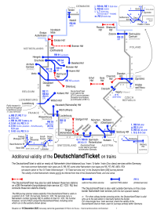
The validity of these various tickets cannot be used to infer the validity of another. For instance, that a section of rail service in The Netherlands is valid with a German state ticket does not infer that it is also valid with the DeutschlandTicket. Read the terms and conditions carefully. In the DB website and DB app, it is possible to restrict the search to only services which are valid with the DeutschlandTicket.
Totally separate from all of the aforementioned is FlixTrain, which has its own ticketing. Booking early is recommended.
Since January 2025, Flixtrain sells tickets on five German local train lines that cross into the Netherlands, in connection with tickets for two Flixtrain services: FLX 20 (Köln – Hamburg), and FLX 30 (Aachen – Köln – Berlin – Dresden)
- RB 61 Hengelo – Osnabrück Hbf, connecting with FLX 20
- RB 61 Hengelo – Bielefeld Hbf, connecting with FLX 30
- RB 64 Enschede – Münster Hbf, connecting with FLX 20
- RB 51 Enschede – Dortmund Hbf, connecting with FLX 30
- RE 19 Arnhem C – Duisburg Hbf, connecting with FLX 20 and FLX 30
- RE 13 Venlo – Düsseldorf Hbf, connecting with FLX 20 and FLX 30
See also, e.g., pdf rail maps at DB's website, DB's Elektronisches Kursbuch, Zugfinder, fernbahn.de.
France
The national railway company of France is French Railways, or "SNCF" (Société nationale des chemins de fer français). The train services run by the regions are called Transilien in Île-de-France / Paris region, or TER in other regions. Services run at the national level include TGV INOUI (high speed), Intercité (long-distance conventional rail), Intercité de nuit (domestic night sleeper services). This is a map of the intercité / intercité de nuit network. For these services, it is best to book early.
The two French regions that border Belgium / Luxembourg – Hauts-de-France (northern France) and Grand-Est (northeastern France) – have taken over all the Intercité services in their regions, so they are now all classed as TER. TGV also runs in these regions (and further to Brussels and Luxembourg). Bookings can be done at the national SNCF website / app, or the regional websites of TER Hauts-de-France and TER Grand-Est. Both TER Hauts-de-France and TER Grand Est have cheap tickets for regional trains, so it is best to book early. In addition, TER Hauts-de-France has TERGV, which is normal TER fare plus a small surcharge for certain TGV services within the region.
OUIGO is the low-cost brand of SNCF. There are high-speed-rail and conventional-rail services. Like low-cost airlines, you can only book online, and it is best if you book early. OUIGO's conventional-rail service between Brussels-South and Paris Nord begins on 19-12-2024.
The following is a diagram of rail options between Amsterdam, Brussels, London, and Paris.
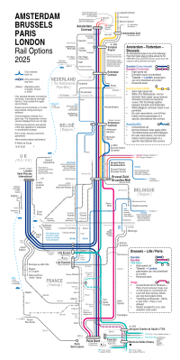
See also, e.g., SNCF rail maps, Train O'Clock France (electronic train timetables), transbus.org.
Some developments in 2026
- 14-12-2025:
- The Amsterdam Centraal – Alkmaar night train has added a stop at Uitgeest.
- In the weekend there is now a Sprinter between Uitgeest and Breukelen
- On Saturday, there are now four instead of two Sprinters per hour between Den Haag Centraal and Dordrect
- On Friday and weekend, IC Alkmaar – Amsterdam Centraal becomes IC Alkmaar – Maastricht; IC Enkhuizen – Maastricht becomes IC Enkhuizen – Amsterdam Centraal
- On weekdays, the peak-only IC extension Amersfoort Centraal – Deventer is regularised
- One out of the two IC Zwolle – Roosendaal per hour is extended to Vlissingen (the old Sprinter Roosendaal – Vlissingen no longer runs)
- In the evening and weekend, one out of the two IC Amsterdam Centraal – Vlissingen is shortened to Roosendaal
- On Friday and weekend, one out of two IC Eindhoven Centraal – Heerlen per hour is coupled with IC Alkmaar – Maastricht
- Winschoten – Bad Nieuweschans is transferred from the all-stop service to the express service
- On Sunday morning, Terborg – Winterswijk becomes 2x/h (from 1x/h)
- Weekdays: Denderleeuw – Geraardsbergen is now all run by S3 (S6 has been retired). There are now 2x/h during daytime: 1x/h is S3 Denderleeuw – Geraardsbergen, and 1x/h is S3 Denderleeuw – Geraardsbergen – Dendermonde (the limited stop P trains between Derderleeuw and Geraardsbergen have been cancelled)
- Weekdays (during non-vacation period): The Geraadsbergen – Enghien peak extension of S5 becomes 2x/h before ~19:00, and 1x/h after ~19:00
- The Mechelen – Hofstade – Delta section has been transferred from S4 to S7. The original 1x/h S7 Halle – Delta – Vilvoorde runs as usual, and now an additional 1x/h S7 runs Halle – Delta – Villvoorde – Hofstade – Mechelen.
- S4 now runs 2x/h (weekdays) or 1x/h (weekend) Aalst – Jette – B-Luxembourg. On weekdays, 1x/h of these continues all stop to Louvain-La-Neuve (replacing the earlier S81)
- Weekend: IC Antwerpen-Centraal – Lier – Leuven is added
- Weekend: IC De Panne – Aalst – Brussel-Nord is extended to Leuven
- Weekend: IC Knokke – Brussels-Airport – Leuven is extended to Ans and Liège-Guillemins
- Weekend: IC Antwerpen-Centraal – Brussels-South (the service that did not stop at Mechelen-Nekkerspoel) is extended from Brussels to Charleroi-Centraal
- Sunday: S Eeklo–Ronse is raised to 1x/h from 1x/2h
- The L Ciney – Rochefort-Jamelle and L Marloie – Libramont are joined
- Dendermonde – Brussel-Zuid gets one pair of P-trains
- P Namur > Luxembourg and Arlon > Namur shorten to Marloie
- Weekdays: L Libramont – Arlon and L Arlon – Luxembourg are joined
- Weekdays: Rumerlange – Noertzange now has 1x/h during non-peak times
- Weekends: Luxembourg – Troisvierges now has more regularised trains throughout the year
Disclaimer
I do this as a hobby. I am not a travel agent; while I would be interested in questions that you might have, please direct your questions to the public transport providers involved. Situations and rules can change quickly; please check with the public transport providers for the latest information. I take utter care on the accuracy of the information I provide here, but I cannot be held responsible for any inaccuracies. If you see any doubtful information, comments are welcome: hilario.penguinden gmail.
Unless otherwise stated, all diagrams, photos, and videos are work of mine. Please respect copyright. The quality of the photos and videos is possibly not very good; I hope that they are good enough for illustrative purposes.
I would like to thank Arne Nys' Network map of the Belgian railways (2015), which I learnt a lot from. Also see the NS 2026 railmap.
This page in 2025Please buy me a coffee/tea! ☕